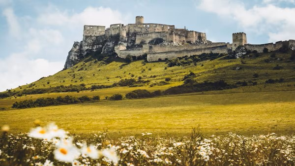
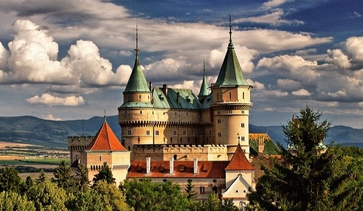
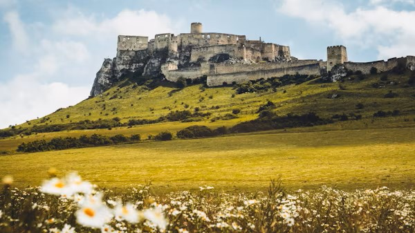
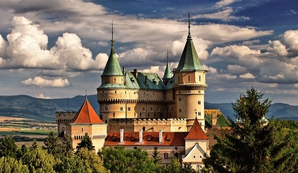

Аrchitektúra
Аrchitektúra Slovenska predstavuje unikátne spojenie rôznych štýlov a období, odzrkadľujúce
bohaté historické dedičstvo tejto krajiny. Slovensko, nachádzajúce sa v srdci Európy, má
množstvo historických budov, kultúrnych pamiatok a architektonických skvostov, ktoré svedčia
o bohatstve svojho kultúrneho dedičstva.
Jedným z najdôležitejších architektonických aspektov Slovenska je jeho hradné dedičstvo.
Krajina je známa svojimi mnohými hradmi, umiestnenými na malebných kopcoch a horách.
Napríklad Spišský hrad, zapísaný na zoznam svetového dedičstva UNESCO, je výnimočným
príkladom gotickej architektúry. Táto monumentálna stavba slúžila nielen ako obranná
štruktúra, ale aj ako centrum kultúrnej a vzdelávacej činnosti.
V starých mestách Slovenska, ako sú Bratislava a Košice, sa zachovali úzke uličky, farebné
fasády a námestia obklopené budovami v štýloch baroka, renesancie a klasicizmu. Medzi ne
patrí Dóm svätého Martina v Bratislave a svätá Alžbeta v Košiciach. Tieto architektonické
skvosty nie sú len historickými pamiatkami, ale aj obľúbenými turistickými miestami.
Súčasná architektúra v Slovensku tiež nachádza svoje miesto, najmä v veľkých mestách.
Bratislava, hlavné mesto krajiny, predstavuje zmes starého a nového, kde sa moderné
kancelárske budovy miešajú s historickými pamiatkami. Príkladom súčasnej architektúry môže
byť komplex budov "Dunajský pohár", umiestnený na brehu Dunaja.
Slovenská architektúra odzrkadľuje rozmanitosť a bohatstvo kultúrneho dedičstva krajiny,
ponúkajúc milovníkom umenia možnosť ponoriť sa do jedinečnej zmesi štýlov a období.
 


